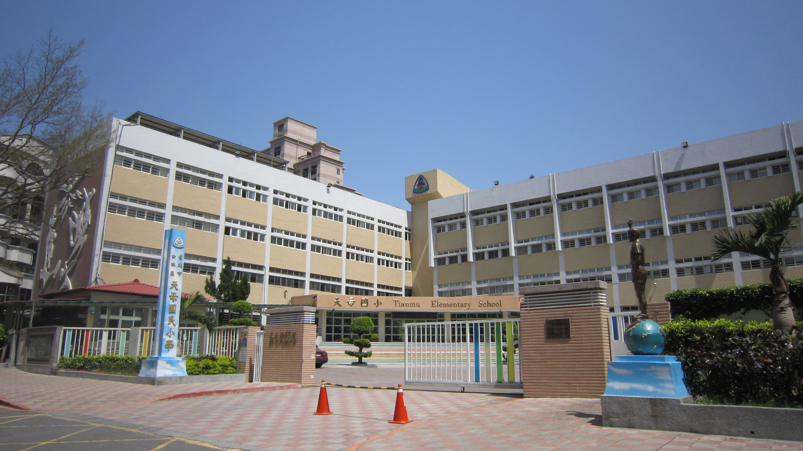
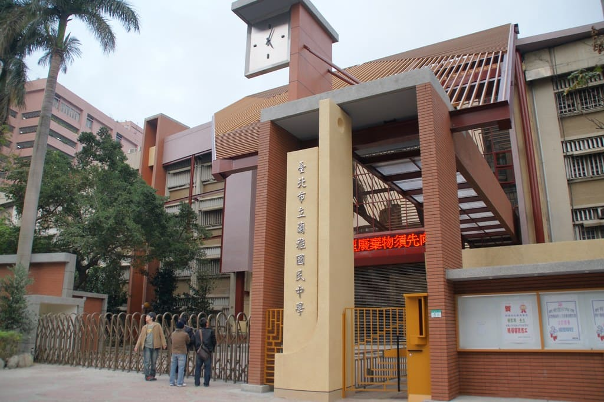
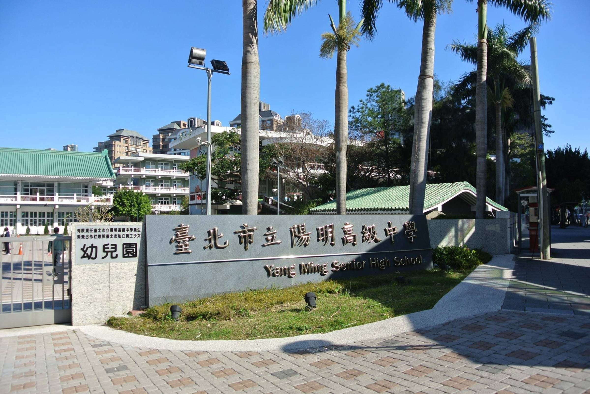
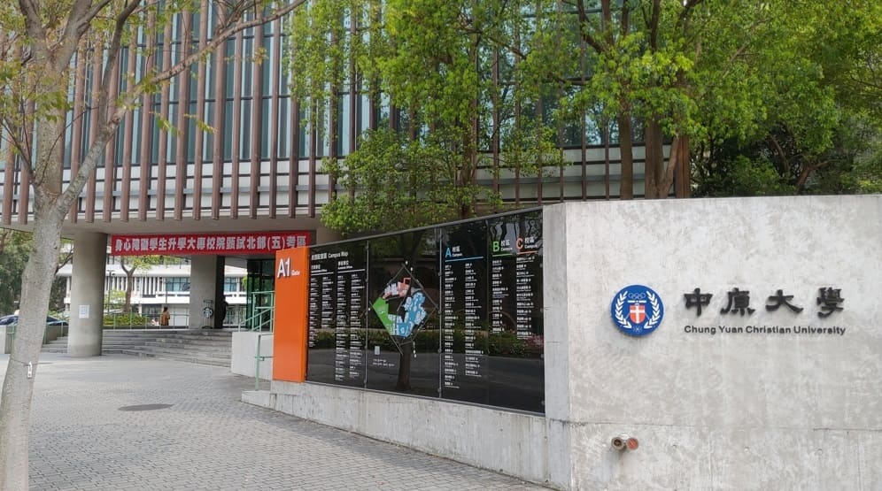
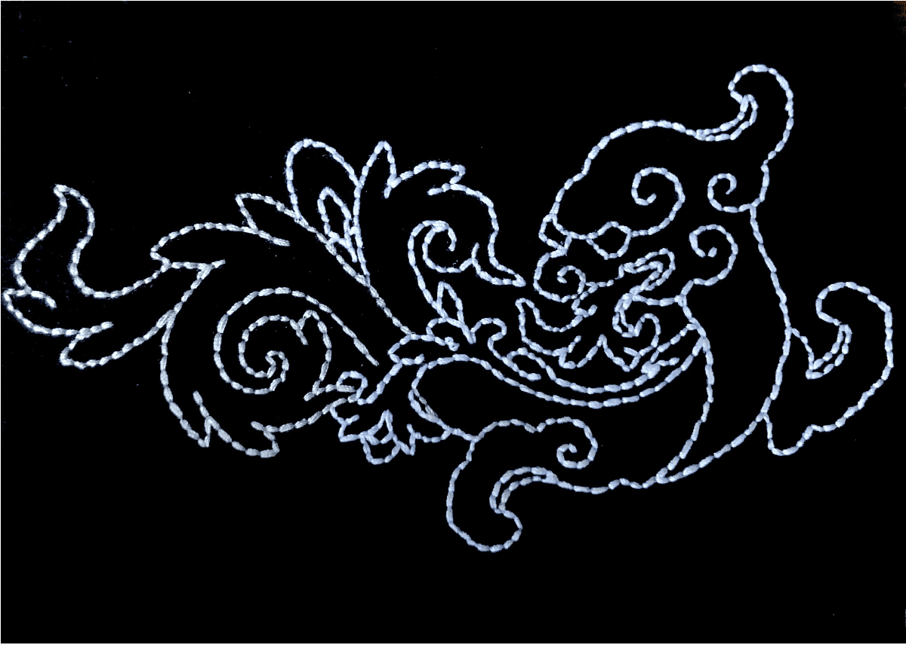

About Me
Skills
資訊技能
- python
- html
- css
- excel
會計技能
中會
高會
成會
審計
Education
|  |  |  |  |
Experiences
學習經歷
|
大二：企業參訪（安永聯合會計師事務所） 剛好系辦有舉辦活動，讓我有機會到安永會計師事務所的台北所參觀，了解未來所面臨的職場狀況及環境， 以及事務所的徵才要求與預期，並聽取學長姐的心路歷程，發現自己要加強及改進的優缺點。 |
|
|  |
大三：工藝與生活美學 這門課有讓我在繁重的讀書生活中能藉由藝術稍作喘息，第一次接觸紙刺繡十分興奮，相較於真實的刺繡簡單許多， 底下還有一張紙做底版，但不失其有趣程度，我一開始就選擇難度中上的龍形圖案，雖然老師沒有強制要我們做完， 我仍舊是在閒暇期間將其完成，完成的瞬間，成就感滿滿。 |
|
|
大三：英文演講比賽 經過老師推舉有幸參加商學院的英文演講比賽，這對沒有過往經驗的我來說是一個極大的挑戰，在準備比賽的期間， 我會利用每週英文課的課前時間與老師討論準備的狀況，希望把一切都做到最好。沒想到結果出乎我的意料，我居然拿到第四名， 激動的心情難以言諭，這次的比賽給了我很大的信心，即使我得的不是前三名，但也代表我的努力有所結果，未來能夠再向前邁進， 也謝謝老師每週的叮嚀與鼓勵，讓我能夠獲得這個美好的經驗。 |
工作經歷
|
大一暑假：建管處公寓大廈科 我的工作內容是登記桌的工作，需要將各式文件轉交給各個承辦人，但在此期間帶領我的姊姊有兩次的長期休假， 使我要獨自完成所有工作，一開始很緊張，怕自己做不好，耽誤了其他承辦人的時間，但後來發現，其實並沒有想像中困難， 一步一步將過去學習到的步驟完成，不會就問，做錯了就及時修正，難題迎面而解。 |
大二暑假：士林稅捐稽徵 我的工作內容是牌照稅的欠稅清理與過往資料的清冊整理。在整理的過程中，我能從中認識一些關於稅捐方面的知識， 知道承辦人的用意為何。我雖然沒有直接與民眾接洽，而上班時，在與承辦人和民眾的談話裡知曉一些稅務方面的小知識， 也能學習如何與人應對，面對頑固的民眾應該如何解決等⋯⋯。 |